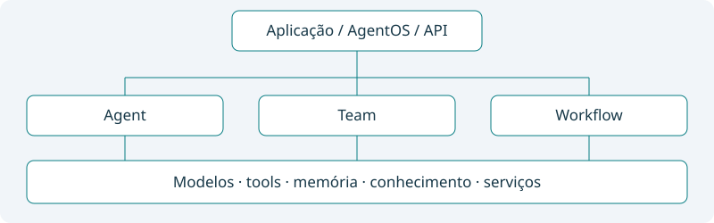

← Todos os laboratórios por tecnologia · Ir aos 13 laboratórios práticos
Do primeiro agente à engenharia de aplicações com AgentOS (Agent, Team, Workflow).
1. O que é o Agno?
Framework Python para construir agentes, equipes e fluxos explícitos. AgentOS expõe esses componentes por serviços; o Control Plane permite interação e monitoramento, e Studio oferece configuração visual de componentes registrados. Não é um modelo de linguagem nem um assistente pessoal pronto.
Ficha tecnológica Agno · Agente de IA
1.1 O problema que o Agno resolve
Imagine uma aplicação que recebe uma pergunta sobre cursos, consulta um catálogo e devolve uma resposta fundamentada. Um LLM isolado pode inventar vagas. Com Agno, o desenvolvedor disponibiliza uma função de consulta e orienta o modelo a usá-la. O framework administra a interação entre modelo e ferramenta, mas o código da aplicação controla o acesso e a validade da operação.
| Componente | Responsabilidade | Exemplo |
|---|---|---|
| Agent | Selecionar ações a partir de objetivo e contexto | Consultar cursos por código |
| Team | Coordenar membros com competências distintas | Analista e revisor |
| Workflow | Definir etapas e condições explícitas | Consultar → validar → sintetizar |
| AgentOS | Expor componentes em serviços | API consumida por aplicação web |
| Control Plane / Studio | Inspecionar e configurar componentes registrados | Experimentar agentes e observar execuções |
1.2 O que não é
Agno não é um LLM, não fornece automaticamente dados institucionais e não concede permissões a contas externas. Instalar o SDK também não implica instalar um assistente pessoal pronto. Comece pela função Python, depois acrescente o agente. Abrir laboratório 01 →
2. Arquitetura e ciclo de execução
Entrada → agente + modelo → seleção de ferramentas → execução controlada → resultado. Teams agregam especialistas; Workflows definem a ordem e as condições. AgentOS hospeda APIs; a aplicação de negócio é responsável por identidade e permissões.

2.1 Ciclo de uma solicitação
- A aplicação autentica o usuário e determina o escopo.
- Agent recebe a pergunta, instruções e ferramentas permitidas.
- O modelo propõe uma chamada com argumentos estruturados.
- O executor valida os argumentos e a autorização, consulta a fonte e devolve o resultado.
- O modelo interpreta o retorno e decide se necessita de outra operação.
- A aplicação valida a resposta e registra metadados autorizados.
2.2 Separação de responsabilidades
O SDK representa a lógica do agente; AgentOS publica serviços; a interface do usuário pode ser própria. Banco de dados, modelo, ferramenta e aplicação são componentes independentes. Uma consulta SQL não deve ser substituída por uma resposta provável do modelo. Autorização deve ocorrer antes de cada operação, inclusive se a chamada vier de um Team.
| Camada | Onde implementar | Falha a prevenir |
|---|---|---|
| Interface | Web, canal autorizado ou CLI | Identidade forjada |
| Controle | Backend e políticas | Acesso cruzado |
| Inteligência | Agent ou Team | Alucinação ou seleção incorreta |
| Execução | Tools e Workflow | Efeito externo indevido |
| Persistência | SQLite no laboratório; PostgreSQL em produção | Mistura de sessões |
Experimente primeiro em terminal (Abrir laboratório 01 →), depois por API (Abrir laboratório 10 →).
3. Quando utilizar e quando evitar
A escolha depende da natureza do problema, do controle necessário e do ambiente de operação — não da quantidade de funcionalidades de uma tecnologia.
3.1 Comece pelo problema, não pelo framework
Agno é adequado quando queremos construir uma aplicação própria em Python na qual o modelo interpreta objetivos, utiliza ferramentas e mantém contexto. Seu diferencial é articular essas capacidades com equipes, workflows e um runtime HTTP. Se a tarefa já tem uma sequência conhecida, um script ou uma automação visual pode ser mais simples, barata e previsível.
| Necessidade principal | Escolha inicial | Quando evoluir para Agno |
|---|---|---|
| Emitir certificado com regra de frequência | Python ou n8n | Somente se houver uma demanda adicional de interpretação ou assistência em linguagem natural. |
| Integrar Gmail, Calendar e notificações | n8n | Quando for preciso raciocínio contextual, uso dinâmico de ferramentas ou um backend Python de agentes. |
| Assistente pessoal pronto e extensível | OpenClaw / Hermes Agent | Quando a equipe precisar construir seu próprio produto, API e modelo de dados. |
| Produto inteligente com sessões, ferramentas e API | Agno | Comece com Agent e adicione AgentOS quando houver consumidores externos. |
| Processo com estados, interrupções e retomada explícitos | LangGraph | Agno é candidato se seus workflows explícitos cobrirem os mesmos requisitos; teste recuperação e estado. |
| Equipe de especialistas com papéis e delegação | CrewAI ou Agno Team | Compare qualidade de delegação, número de chamadas e rastreabilidade. |
| Contratos Python fortemente tipados | PydanticAI | Compare validação, ergonomia e integração operacional; Agno também oferece esquemas. |
| Ferramentas e handoffs em SDK de agentes | OpenAI Agents SDK / Google ADK | Avalie ecossistema de modelos, implantação, tracing e custo de integração. |
3.2 Comparação por dimensão de engenharia
| Tecnologia | Unidade central | Controle da execução | Operação e integração | Limite a considerar |
|---|---|---|---|---|
| Agno | Agent, Team, Workflow | Dinâmico ou explícito | AgentOS, API e tools Python | Exige programação e governança própria |
| n8n | Workflow e nós | Grafo visual; agente opcional | Conectores e webhooks | Lógica complexa pode exigir código |
| OpenClaw / Hermes | Assistente/runtime | Agente e extensões | Canais e ferramentas | Produto multiusuário exige avaliação de isolamento |
| LangGraph | Grafo e estado | Transições explícitas | Integrações por código | Modelagem e infraestrutura exigem esforço |
| CrewAI | Crew e Flow | Delegação e fluxo | Tools e serviços | Overhead de coordenação |
| PydanticAI | Agent e contratos | Ferramentas tipadas | Backend Python | Serviços de negócio ainda necessários |
| ADK / Agents SDK | Agent e ferramentas | Orquestração programática | Ecossistemas e tracing | Avaliar dependências e requisitos de operação |
3.3 Quando evitar ou adiar o Agno
- Regra matemática, validação de formulário ou CRUD sem interpretação: use código determinístico.
- Integração simples entre aplicações: prefira conectores existentes antes de escrever adaptadores.
- Equipe sem experiência Python: uma prova de conceito visual pode oferecer retorno mais rápido.
- Dados restritos sem política aprovada de modelos, logs e credenciais: adie a conexão real e use dados sintéticos.
- Uma única tarefa de resumo: uma chamada ao LLM com validação pode bastar; não crie Team sem necessidade.
3.4 Estudo de caso: FCT.IA
Para transformar WhatsApp em tarefas, n8n pode receber o evento, filtrar privacidade e registrar uma proposta. Agno pode assumir a interpretação complexa e seleção de ferramentas, enquanto n8n mantém integrações. Não introduza ambos sem medir o benefício. Na arquitetura alternativa, Next.js autentica o usuário, AgentOS executa o agente com contexto específico, e o backend autoriza cada consulta e gravação. Dois agentes não precisam conversar continuamente: compartilham registros autorizados.
3.5 Decisão experimental: comparação justa
Implemente a consulta de cursos em Python puro, n8n e Agno com o mesmo catálogo, modelo (quando necessário), instruções e casos. Inclua código inexistente, solicitação ambígua e tentativa de acesso não permitido. Meça acertos, chamadas de ferramentas, latência, tokens, esforço de implementação e manutenção. Não atribua ao framework diferenças causadas por outro modelo.
| Critério | Como verificar |
|---|---|
| Qualidade | Resposta correta e fundamentada no catálogo |
| Custo | Tokens de entrada/saída e chamadas por execução; registre preço do provedor |
| Segurança | Operações proibidas bloqueadas fora do LLM |
| Manutenção | Tempo para acrescentar ferramenta e alterar regra |
| Operação | Reinício, logs sanitizados, identificação da versão |
3.6 Orientador de decisão
Comece por Python ou n8n; não precisa de LLM.
Orientador didático, não ranking de desempenho. As recomendações são hipóteses de engenharia que devem ser testadas no contexto real.
Referências: Agno Quickstart · AgentOS · Tipos e padrões de workflows.
4. Instalação e primeiro agente
python -m venv .venv
python -m pip install agno openai
python -m pip show agnoAtive o ambiente antes de instalar. Configure a chave do provedor por variável de ambiente; nunca publique o segredo. Execute o Lab01.
4.1 Preparar o ambiente no Windows, Linux ou macOS
Abra o terminal na pasta do Lab01. Use Python 3.12 como ambiente sugerido. Verifique a versão e crie o ambiente virtual; no Windows, execute os comandos PowerShell abaixo (se a ativação estiver bloqueada, use diretamente .venv\Scripts\python.exe).
python --version
python -m venv .venv
# PowerShell
.venv\Scripts\Activate.ps1
# Linux/macOS: source .venv/bin/activate
python -m pip install -r requirements.txt
python -m pip freeze > ambiente-validado.txt4.2 Executar o primeiro agente
Configure OPENAI_API_KEY no terminal de forma segura, ou siga o Lab02 para Ollama. Os arquivos .env.example são modelos; o código lê variáveis do ambiente. Execute primeiro os testes determinísticos, depois o agente:
python testar.py
python app.pyfrom agno.agent import Agent
from comum import modelo, consultar_curso
agente = Agent(model=modelo(), tools=[consultar_curso], instructions=["Use a ferramenta para consultar cursos. Não invente resultados. Dados fictícios."], markdown=True)
if __name__ == "__main__":
agente.print_response(input("Pergunta: "))
Informe “Qual o nome do curso C001?”. Espera-se Banco de Dados. C999 deve retornar ausência. Observe se a ferramenta foi realmente chamada. Se o modelo inventar um curso, registre falha. Abrir laboratório 01 →
4.3 Diagnóstico de problemas
| Sintoma | Verificação |
|---|---|
| ModuleNotFoundError | Confirme que python e pip pertencem ao ambiente virtual. |
| 401 / credencial inválida | Confira a configuração da API sem imprimir o segredo. |
| Modelo indisponível | Use um identificador liberado na conta. |
| Resposta sem ferramenta | Teste modelo com suporte a tool calling e examine o retorno. |
5. Modelos locais, servidores e APIs
O SDK roda no computador ou servidor; o modelo pode rodar separadamente. Ollama local usa normalmente localhost:11434; para servidor próprio configure host autorizado, TLS e controle de acesso. Modelos pequenos podem falhar em tool calling. Use LAB_PROVIDER=ollama, LAB_MODEL=qwen3:4b após instalar/puxar um modelo compatível; para API use LAB_PROVIDER=openai e LAB_MODEL apropriado à conta. Compare com o mesmo conjunto de testes.
5.1 Onde o modelo executa?
| Alternativa | Benefício | Cuidado |
|---|---|---|
| Ollama local | Experimentação sem API de geração externa | RAM, velocidade, qualidade e tool calling |
| Servidor próprio | Compartilhar infraestrutura computacional | TLS, autenticação e limites de concorrência |
| API externa | Acesso a modelos sem hospedar pesos | Custos, privacidade e governança |
5.2 Teste comparativo
Instale Ollama separadamente e escolha modelo que suporte ferramentas. Em PowerShell, configure:
ollama pull qwen3:4b
$env:LAB_PROVIDER="ollama"
$env:LAB_MODEL="qwen3:4b"
python app.pyEm Linux/macOS utilize export LAB_PROVIDER=ollama e export LAB_MODEL=qwen3:4b. Para API, altere LAB_PROVIDER para openai e LAB_MODEL para o modelo disponível. Não publique a porta do Ollama sem proteção. A geração local não garante que embeddings ou ferramentas sejam locais.
from pathlib import Path
import os, json, csv
BASE = Path(__file__).resolve().parent
def modelo():
provider = os.getenv("LAB_PROVIDER", "openai")
if provider == "ollama":
from agno.models.ollama import Ollama
return Ollama(id=os.getenv("LAB_MODEL", "qwen3:4b"), host=os.getenv("OLLAMA_HOST", "http://localhost:11434"))
if provider != "openai":
raise ValueError("LAB_PROVIDER deve ser openai ou ollama")
from agno.models.openai import OpenAIChat
return OpenAIChat(id=os.getenv("LAB_MODEL", "gpt-5-mini"))
Execute C001 e C999 em cada configuração. Registre tempo, resposta e uso correto da ferramenta. Abrir laboratório 02 →
6. Ferramentas, skills e contratos
Tool é operação invocável, skill é competência reutilizável. Um arquivo de instruções pode ser carregado pela aplicação; não confundir com suporte nativo de uma versão específica. Valide I/O com Pydantic, restrinja operações por código e use SQL parametrizado. Labs 03–04.
6.1 Tool, skill e contrato: diferenças
Tool é uma função invocável; skill reúne procedimentos e critérios de execução; contrato define entradas e saídas. No Lab03, o arquivo SKILL.md é carregado explicitamente como instrução Python, sem pressupor descoberta automática de skills. Um esquema Pydantic verifica estrutura, mas não comprova que o conteúdo é verdadeiro.
from agno.agent import Agent
from pydantic import BaseModel
from comum import modelo, consultar_curso, BASE
class Resultado(BaseModel):
codigo: str
encontrado: bool
nome: str | None = None
agente=Agent(model=modelo(), tools=[consultar_curso], instructions=(BASE/"SKILL.md").read_text(encoding="utf-8"), output_schema=Resultado)
if __name__ == "__main__":
r=agente.run(input("Código: "))
print(Resultado.model_validate(r.content).model_dump_json())
6.2 Dados tabulares e SQL
No Lab04, a aplicação converte dados sintéticos do CSV para Excel e SQLite. A função total_vagas calcula o resultado com SQL fixo e confere o total no Excel. O LLM resume o resultado; não calcula por aproximação nem recebe acesso arbitrário ao banco.
SELECT SUM(vagas) FROM curso;Compare o total dos dois formatos, altere uma linha de teste e observe a divergência. Abrir laboratório 03 → · Abrir laboratório 04 →
7. Memória, segundo cérebro e RAG
Histórico de sessão, preferências persistidas e dados oficiais têm ciclos de vida distintos. SQLite serve ao experimento; PostgreSQL é candidato multiusuário, com isolamento validado. Memória e RAG complementam-se: recuperação de documentos não substitui o estado transacional. Labs 05–06.
7.1 O que deve ser lembrado?
| Tipo | Exemplo | Persistência |
|---|---|---|
| Histórico de sessão | Perguntas anteriores | SQLite, com ID de sessão |
| Preferência | Formato de resposta | Registro validado pelo usuário |
| Estado de negócio | Tarefa pendente | Tabela transacional autorizada |
| Conhecimento documental | Norma ou regulamento | Repositório e índice RAG |
7.2 Memória isolada
No Lab05, o usuário fictício A e B possuem bancos separados. Informe uma preferência em A, reinicie e consulte na mesma sessão; depois consulte em B. A separação por arquivos demonstra o conceito, mas não é autenticação multiusuário de produção.
from agno.agent import Agent
from agno.db.sqlite import SqliteDb
from comum import modelo, BASE
if __name__ == "__main__":
user=input("Usuário fictício A ou B: ").upper()
if user not in {"A","B"}:raise ValueError("usuário inválido")
a=Agent(model=modelo(),db=SqliteDb(db_file=str(BASE/f"sessao_{user}.db")),add_history_to_context=True,num_history_runs=3)
r=a.run(input("Mensagem: "),user_id=user,session_id=f"sessao-{user}")
print(r.content)
7.3 Recuperação de conhecimento
No Lab06, o texto norma.txt é sintético. O índice recupera trechos relevantes para fundamentar a resposta. O exemplo usa embeddings OpenAI mesmo que o modelo de geração seja local; portanto exige credencial e não é totalmente offline. Teste uma pergunta coberta pelo documento e outra ausente. Verifique se a referência realmente existe e se o índice não duplica documentos a cada execução.
8. Equipes e workflows
Teams delegam trabalho; Workflows organizam passos explícitos (Step, Steps, Condition, Router, Loop e Parallel). Agentes, equipes e funções Python podem ser executores. Compare Determinístico · Com IA · Agêntico · Híbrido. Use limites de iterações, orçamento e validação. Labs 07–08.
8.1 Agent, Team ou Workflow?
Agent resolve uma tarefa com ferramentas; Team coordena especialistas quando a delegação é útil; Workflow controla etapas conhecidas. Um Team não é obrigatório para separar usuários: no FCT.IA, duas instâncias independentes podem colaborar por registros autorizados.
from agno.agent import Agent
from agno.team import Team
from comum import modelo, consultar_curso
analista=Agent(name="Analista",model=modelo(),tools=[consultar_curso],instructions="Consulte o catálogo e reporte evidências.")
revisor=Agent(name="Revisor",model=modelo(),tools=[consultar_curso],instructions="Verifique os resultados consultando o catálogo.")
equipe=Team(name="Coordenação",model=modelo(),members=[analista,revisor],instructions="Delegue consulta e revisão, informe divergências.")
if __name__ == "__main__":equipe.print_response(input("Demanda: "))
| Padrão | Componente candidato | Exemplo |
|---|---|---|
| Sequencial | Step / Steps | Consulta e validação |
| Condicional | Condition / Router | Encaminhar mensagem por categoria |
| Paralelo | Parallel | Consultas independentes |
| Iterativo | Loop | Revisar até limite |
| Delegação dinâmica | Team | Analista e revisor |
8.2 Experimente quatro tipos de workflow
Execute o Lab08 sem IA e depois com --ia. No primeiro caso, a consulta e a validação são regras explícitas; no segundo, o agente sintetiza a resposta. O workflow que contém a síntese permanece explicitamente organizado. Para comportamento agêntico, compare com Lab01; para colaboração, Lab07.
python app.py
python app.py --iaCompare C001 e C999; a inclusão do LLM não pode modificar os fatos da consulta. Abrir laboratório 07 → · Abrir laboratório 08 →
9. MCP e interoperabilidade
MCP padroniza acesso a ferramentas; use servidor de leitura restrito no Lab09. AgentOS pode disponibilizar componentes por MCP. Escopos, autenticação e autorização precisam ser configurados; MCP não concede acesso automaticamente.
9.1 Cliente, servidor e ferramenta
O servidor MCP expõe um catálogo de operações; o cliente descobre e invoca ferramentas. No Lab09 o transporte é local por processo e a operação consulta somente o catálogo sintético. MCP não é o canal de comunicação entre agentes nem substitui autenticação.
from mcp.server.fastmcp import FastMCP
from comum import consultar_curso
mcp=FastMCP("catalogo-sintetico")
mcp.tool()(consultar_curso)
if __name__=="__main__":mcp.run(transport="stdio")
9.2 Execução e verificação
Instale as dependências do laboratório e execute app.py. O cliente inicia o servidor. Solicite C001 e depois tente uma operação de escrita inexistente. A ferramenta não deve alterar o arquivo. Em servidor remoto, use autenticação, escopos e transporte protegido. Abrir laboratório 09 →
10. AgentOS e Studio
AgentOS fornece um runtime baseado em FastAPI. Explore o OpenAPI local e opcionalmente o Control Plane e Studio (conforme disponibilidade/licença). Não exponha o endpoint de laboratório à internet. O Studio não substitui o backend institucional. Lab10.
10.1 Diferença entre SDK, runtime e interface
AgentOS transforma objetos registrados em serviços acessíveis a outras aplicações. O Control Plane é uma interface para interagir com runtimes conectados e inspecionar operações; Studio permite compor componentes registrados visualmente. Não confunda essa interface com o sistema web final do usuário. Disponibilidade e condições de uso devem ser verificadas.
from agno.agent import Agent
from comum import modelo, consultar_curso
agente = Agent(model=modelo(), tools=[consultar_curso], instructions=["Use a ferramenta para consultar cursos. Não invente resultados. Dados fictícios."], markdown=True)
from agno.os import AgentOS
from agno.db.sqlite import SqliteDb
from comum import BASE
agent_os=AgentOS(agents=[agente],db=SqliteDb(db_file=str(BASE/"agentos.db")))
app=agent_os.get_app()
if __name__ == "__main__":
import uvicorn
uvicorn.run(app,host="127.0.0.1",port=7777)
10.2 Passo a passo no laboratório
- Instale requirements.txt e configure o modelo.
- Execute python app.py; mantenha o terminal aberto.
- Abra http://127.0.0.1:7777/docs no navegador.
- Localize os endpoints de agentes e consulte o esquema da versão instalada.
- Selecione uma operação de execução, use o identificador retornado pela listagem e teste uma consulta C001.
- Compare o retorno HTTP com a execução no terminal. Não exponha o servidor de exemplo à internet.
10.3 Experimentar Studio e Control Plane
Depois de validar o runtime, consulte os guias oficiais para conectar um ambiente de teste, registrar ferramentas e modelos em um Registry e criar uma composição visual. Inspecione sessões e traces sintéticos. Não utilize documentos institucionais nesse ambiente antes de validar a política de dados.
11. WhatsApp, Telegram, n8n e aplicações web
Use a interface oficial WhatsApp Business, credenciais e webhook HTTPS; não há leitura irrestrita de WhatsApp pessoal. Telegram utiliza bot próprio. n8n pode invocar a API do AgentOS por HTTP Request, ou executar um fluxo determinístico externo ao agente. Para FCT.IA priorize mensagens encaminhadas, separação de ambientes e aprovação. Lab11.
11.1 Três opções de integração
| Canal | Configuração | Validação mínima |
|---|---|---|
| WhatsApp Business Cloud | Aplicação Meta, número de teste, token, ID do número, segredo e webhook HTTPS | Assinatura, remetente autorizado, deduplicação |
| Telegram | Bot de teste, token, webhook protegido | Segredo do webhook e autorização por chat |
| n8n / Web | HTTP Request para API do AgentOS | Identidade, timeout e tratamento de erro |
11.2 Testar primeiro sem credenciais de mensageria
Execute Lab11, abra /docs e utilize uma mensagem sintética. O app.py atual expõe um agente por API local; não configura um bot real. No n8n, crie Manual Trigger → Edit Fields (mensagem) → HTTP Request. Utilize o endpoint e o corpo descritos pelo OpenAPI local; se n8n estiver em Docker, localhost dentro do contêiner não aponta automaticamente para o host.
11.3 WhatsApp institucional: percurso de implantação
- Crie ou utilize uma aplicação Meta e um número de teste autorizado.
- Configure tokens e identificadores como segredos, nunca no Git.
- Configure o webhook HTTPS conforme a documentação oficial, verificando assinatura e escopo.
- Teste encaminhamento de mensagem institucional, mensagem ambígua e evento repetido.
- O agente propõe uma tarefa; um gestor confirma antes de persistir ou enviar a terceiros.
O canal oficial não oferece leitura geral de conversas pessoais. Para o FCT.IA, priorize encaminhamento seletivo antes de qualquer classificação externa. Não armazene conteúdo particular em memória, traces ou backups.
11.4 Telegram e aplicação própria
Use um bot de teste criado no BotFather e siga a configuração de webhook do guia Agno. Para Next.js, faça a chamada no backend autenticado, não exponha tokens ao navegador. Em todos os canais, vincule a identidade verificada ao ambiente do gestor.
Abrir laboratório 11 → · WhatsApp oficial Agno · Telegram oficial Agno
12. Guardrails, supervisão e manutenção
Guardrails complementam, mas não substituem autorização. Trate mensagens e documentos como dados não confiáveis; limite tools e sessões, proteja segredos, imponha timeouts, minimize logs, teste recusa e confirmação. Lab12. Fixe as versões após validar no ambiente real.
12.1 Defesa em profundidade
| Risco | Controle | Teste |
|---|---|---|
| Prompt injection | Tratar mensagens como dados, não instruções | Texto pede ignorar política |
| Acesso cruzado | Checar usuário e recurso no backend | Direção tenta consultar memória da Vice |
| Ação externa | Aprovação ligada à operação e parâmetros | Recusar envio simulado |
| Exposição de segredos | Variáveis de ambiente e logs minimizados | Inspecionar arquivos e traces |
| Repetição | Idempotência e limite de iterações | Reenviar evento idêntico |
12.2 Aprovação humana no código
Lab12 utiliza uma ferramenta que simula envio; não envia mensagem real. Observe a pausa, examine o conteúdo proposto e escolha aprovar ou rejeitar. Confirme que a rejeição não provoca a execução. O recurso de confirmação da versão instalada deve ser validado; não confie só no prompt.
from agno.agent import Agent
from agno.tools import tool
from comum import modelo
@tool(requires_confirmation=True)
def simular_envio(texto: str) -> str:
"""Simula envio aprovado; nenhum canal externo é usado."""
return "SIMULAÇÃO: "+texto
if __name__ == "__main__":
a=Agent(model=modelo(),tools=[simular_envio],instructions="Proponha somente textos fictícios.")
r=a.run(input("Pedido: "))
if r.is_paused:
for req in r.active_requirements:
print(req)
if input("Aprovar? (s/N) ").lower()=="s":req.confirm()
else:req.reject()
r=a.continue_run(run_id=r.run_id,requirements=r.requirements)
print(r.content)
Em produção, autentique o aprovador, associe aprovação aos parâmetros exatos, aplique prazo de validade e registre o resultado sem conteúdo sensível. Abrir laboratório 12 →
13. Aplicações e projeto integrador
FCT.IA: assessoria executiva com ambientes separados e colaboração autorizada. Observar.IA: radar, verificação, curadoria humana. Gestor.IA: indicadores calculados por SQL. Paranapanema.IA: evidências com proveniência. Agno é alternativa experimental ao n8n, não substituição automática. Lab13 compara arquiteturas.
13.1 Projeto integrador: do experimento ao produto
| Projeto | Agno pode apoiar | Serviço determinístico |
|---|---|---|
| FCT.IA | Interpretar demandas e sugerir encaminhamentos | Agenda, autorização e registros |
| Observar.IA | Coordenação de análise e síntese | Deduplicação, fontes e publicação aprovada |
| Gestor.IA | Explicar indicadores | SQL e cálculo de métricas |
| Paranapanema.IA | Consultar evidências e produzir sínteses | Séries, qualidade e proveniência |
13.2 Experimento incremental
Lab13 permite selecionar os papéis DARCY, BERTHA, RADAR ou VERIFICADOR e consultar um catálogo fictício. É um esqueleto de agente por papel, não uma implementação de colaboração ou isolamento de produção. Execute:
python app.py DARCY
python app.py BERTHACompare respostas para a mesma pergunta. Como extensão, implemente IDs de ambiente autenticados, registro compartilhado único, aprovação de encaminhamentos e teste de acesso cruzado. Compare com o equivalente n8n sem substituir a arquitetura FCT.IA aprovada.
14. Laboratórios práticos
Todos os materiais estão nas pastas dos respectivos laboratórios desta Wiki. Não há kit independente.
| Lab | Título | Objetivo |
|---|---|---|
| 01 | Primeiro agente (Agent) | Entender a diferença entre uma chamada ao modelo e um agente com ferramentas. |
| 02 | Modelos locais e APIs | Comparar o mesmo agente em modelo local via Ollama e API externa. |
| 03 | Tools, skills e saída estruturada | Encapsular capacidades Python e validar a resposta por esquema. |
| 04 | Análise de arquivos e banco de dados | Executar cálculos por código sobre CSV, XLSX e SQLite; usar LLM apenas para interpretação. |
| 05 | Memória e sessões | Persistir histórico e separar sessões por usuário. |
| 06 | Knowledge e RAG | Indexar documento sintético e recuperar fontes antes de responder. |
| 07 | Teams e delegação | Coordenar especialistas com papéis distintos. |
| 08 | Workflows determinísticos, com IA, agênticos e híbridos | Executar funções em um fluxo explícito e acrescentar agente em etapa controlada. |
| 09 | MCP cliente e servidor | Expor uma ferramenta de consulta somente leitura a um agente. |
| 10 | AgentOS e interface visual | Expor um agente em API local, explorar OpenAPI e Control Plane. |
| 11 | WhatsApp, Telegram e integração n8n | Experimentar ingresso de mensagens e integração por API, com confirmação antes de registrar. |
| 12 | Guardrails e aprovação humana | Verificar autorização fora do LLM e testar aprovação local de ações simuladas. |
| 13 | FCT.IA e Observar.IA — projeto integrador | Construir protótipo comparável com n8n, dois contextos independentes e catálogo compartilhado somente leitura. |
14.1 Como percorrer a formação
Comece pelos Labs 01–04 para conhecer instalação, modelo e ferramentas. Em seguida, 05–08 introduzem persistência e composição. Os Labs 09–12 tratam integração e segurança. O Lab13 é a síntese. Reserve 4–6 horas para o primeiro percurso básico e tempo adicional para integrações e projeto. Cada laboratório possui seu código e dados dentro da Wiki.
14.2 Antes de avançar
Execute os testes locais, confirme o resultado esperado e registre a versão. Não avance para integração de contas reais enquanto os testes de autorização e recusa não estiverem definidos. Os exemplos de SDK e canais exigem verificação no ambiente instalado.
15. Avaliação e referências
Entregue código, arquitetura, versões, testes positivos e negativos, latência, custo quando mensurável e comparação com baseline determinístico. Use a rubrica padrão. Exemplos SDK não executados nesta edição; testes sem dependências verificam a ferramenta de catálogo. Não confundir com validação de integração real.
Quickstart · Workflows · AgentOS · Studio · MCP · WhatsApp · GitHub
15.1 Rubrica sugerida para a entrega
| Dimensão | Evidência exigida |
|---|---|
| Reprodutibilidade | Versões, comandos, ambiente e dados sintéticos |
| Correção | Casos positivos, ausentes e ambíguos |
| Arquitetura | Justificativa de Agent, Team ou Workflow |
| Segurança | Teste negativo e aprovação quando necessário |
| Eficiência | Latência, chamadas e tokens quando disponíveis |
| Reflexão | Comparação com baseline sem framework |
15.2 Registro experimental
Para cada execução, anote data, modelo, versão, entrada, saída esperada, saída observada, ferramentas acionadas, duração e limitações. Separe testes determinísticos de avaliações dependentes do modelo. Não apresente um protótipo de API como integração de produção validada.
Referências adicionais: Cookbook oficial · Studio · Execução pela interface, API ou MCP.